자연생태복원기사(구) (2007-09-02 기출문제)
1과목: 환경생태학개론
1. 다음 중 람사(ramsar)협약에 대한 설명으로 가장 거리가 먼 것은?
- 국제적으로 중요한 습지에 대한 협약이다.
- 우리나라는 아직 람사협약에 가입되어 있지 않다.
- 습지의 정의와 유형, 보전을 위한 국가의 책임 등을 설명하고 있다.
- 각 나라마다 대표적인 습지는 람사습지로 등록하여 국가차원에서 보전 정책을 수립하고 있다.
(정답률: 알수없음)

2. 다음 중 열대우림 생태계의 특징으로 가장 적합한 것은?
- 영양성분은 나무에 비해 토양에 많이 쌓여 있다.
- 생물다양성이 매우 높은 지역이다.
- 강우량이 적은 지역이다.
- 한번 벌채가 되어도 쉽게 산림이 회복된다.
(정답률: 알수없음)
3. 토양에서 생존하는 생물로 배설물에 질소 및 영양염류가 풍부하여 토양을 비옥하게 하는 생물은?
- 흰개미
- 지렁이
- 뿌리혹박테리아
- 뱀
(정답률: 알수없음)
4. 식생의 발달과정에서 처음에는 환경이 일정하게 유지되다가 새로운 식물이 침입한 후 환경이 변화되어 새로운 식생으로 변하는 천이는?
- 자발적 천이
- 타발적 천이
- 천이 계열
- 종속영양 천이
(정답률: 알수없음)
5. 환경정책기본법령에 따른 환경기준 중 해역의 수질 및 수생태계 환경기준에 따른 설명으로 틀린 것은?
- Ⅰ등급의 용존산소량(DO)은 7.5(mg/L) 이상
- Ⅱ등급의 화학적산소요구량(COD)은 4(mg/L) 이하
- Ⅱ등급의 총대장균군은 1000(총대장균군수/100mL) 이하
- Ⅰ등급의 총질소는 0.3(mg/L) 이하
(정답률: 알수없음)
6. 다음 설명에 적합한 해양 생물대는?
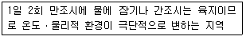
- 연안대
- 천해대
- 대양대
- 심해대
(정답률: 알수없음)
7. 다음 [보 기]가 설명하고 있는 습지식물의 유형에 해당하는 것은?
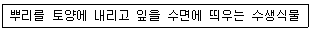
- 갈대
- 어리연꽃
- 개구리밥
- 검정말
(정답률: 알수없음)
8. 기온 분포에 따른 대기권(Atmosphere) 구분이 아닌 것은?
- 대류권(troposphere)
- 성운권(crowdonosphere)
- 중간권(mesosphere)
- 외기권(exosphere)
(정답률: 알수없음)
9. 군집의 우점도 - 다양성 (Dominance-diversity)곡선이다. A, B, C곡선에 대한 설명 중 옳지 않은 것은?
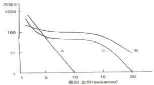
- A곡선은 생태학적 niche의 선점을 수반하는 분포형으로 가장 개체수가 많은 종은 다음 개체수가 많은 종의 2배이다.
- B곡선은 대부분의 자연적인 군집내에서 나타나는 우점도와 종다양성의 특성을 보여준다.
- C곡선은 생태학적 niche가 불규칙하게 분포하면서 서로 인접하지만 중복되지 않는 경우가 우점도와 종다양성간의 극단적인 형태이다.
- 거친 환경 속에서 끊임없이 niche의 선점을 위해 경쟁할 경우에는 C곡선의 형태로, 중복되지 않은 영토확보를 위한 경쟁이 발생한 경우에는 점차 A곡선의 형태를 보인다.
(정답률: 알수없음)
10. 다음 중 CAM 식물(crassulacean acid metabolism plant)에 대한 설명이 아닌 것은?
- 광합성의 명반응과 암반응과 시간이 다르다.
- 서늘한 반에 이산화탄소를 받아들인다.
- 대기 중에 이산화탄소 50ppm 이하라도 남아있기만 하면 유기물 생산이 가능하다.
- 선인장 같은 다육식물에서 나타난다.
(정답률: 알수없음)
11. 다음 중 E.P. Odum의 결합법칙이란 무엇인가?
- 열역학 제 1법칙 + 열역학 제 2법칙
- 독립의 법칙 + 분배의 법칙
- 최소량의 법칙 + 내성의 법칙
- 우열의 법칙 + 일정성분비의 법칙
(정답률: 알수없음)
12. 각기 다른 두 개의 개체군은 자원이 제한된 조건 하에서 같은 장소에서 같은 생태적 지위를 동시에 오랫동안 유지할 수 없다는 현상을 무엇이라 하는가?
- 경쟁배타의 법칙(principle of competitive exclusion)
- 천이(succession)
- 경쟁(competition)
- 텃세(territory)
(정답률: 알수없음)
13. 2002년 지속가능발전에 관한 지구정상회의(WSSD)에서 대두된 WEHAB에 해당하지 않는 것은?
- 물
- 건강 혹은 보건
- 산업
- 생물다양성
(정답률: 알수없음)
14. 자연 생태계에서 녹색 식물의 일차 생산력의 측정 방법이라고 할 수 없는 것은?
- 방형 구획법
- 수확법
- 이산화탄소 측정법
- 엽록체 측정법
(정답률: 알수없음)
15. 다음 중 생물체가 차지하고 있는 기능적 측면과 공간적 분포까지도 포함한 서식지 개념인 생태적 지위(ecological niche)와 관련이 없는 내용은?
- 영양적 지위(trophic niche)
- 시간적 지위(temporal niche)
- 공간적 지위(spatial niche)
- 다차원적 지위(multidimensional niche)
(정답률: 알수없음)
16. 다음 중 산호초의 특성에 대한 설명으로 틀린 것은?
- 산호초란 산호충의 유해나 분비물 등으로 구성된 석회질의 초(reef)를 뜻한다.
- 환초(Atoll)는 얕은 석호를 막고 있는 원형의 산호초를 말하며, 거초로 둘러싸여 있는 열대의 화산섬이 천천히 침강하면서 형성된다.
- 수심 50m 이내의 햇볕이 잘 쬐고 깨끗한 호수, 수온이 20℃ 이상인 수역에서 생성되고 염분 변화가 큰 곳에는 적응할 수 없다.
- 산호 개체의 내부에 공생하는 조류들이 광합성을 하여 바닷물에 이산화탄소를 공급하여, 지구온난화를 촉진한다.
(정답률: 알수없음)
17. 생산자의 광합성 및 화학합성에 의해 방사에너지가 먹이로 이용될 수 있는 유기물의 형태로 고정되는 속도를 무엇이라 하는가?
- 현존생체량(standing biomass)
- 일차생산력(primary productivity)
- 이차생산력(secondary productivity)
- 생물생산고(standing yield)
(정답률: 알수없음)
18. 생물군집 내의 여러 종의 개체군들 사이에는 식물을 근원으로 하는 일련의 수직적인 관계-포식과 피식 등의 관계를 맺고 있는데, 이를 먹이사슬 또는 먹이연쇄라 한다. 1927년 이 용어를 처음 사용한 사람은?
- Forbes
- Lindemann
- Tansley
- Elton
(정답률: 알수없음)
19. 다음 중 빈영양 호수에 비해 부영양 호수에서 나타나는 현상의 설명이 아닌 것은?
- 조류(Algae)가 고밀도로 성장한다.
- 동물의 생산량이 높다.
- 심수층의 산소는 풍부하다.
- 수심이 얕고 투명도 깊이 또한 얕다.
(정답률: 알수없음)
20. 어떤 특정 시간에 특정 공간을 차지하고 있는 같은 종의 생물군을 무엇이라고 하는가?
- 생태군
- 개체군
- 우점군
- 분류군
(정답률: 알수없음)
2과목: 환경계획학
21. 국토의 계획 및 이용에 관한 법률에서 계획관리지역 또는 개발 진흥지구를 체계적 ㆍ계획적으로 개발 또는 관리하기 위하여 용도지역의 건축물 그 밖의 시설의 용도ㆍ종류 및 규모 등에 대한 제한을 완화하거나 건폐율 또는 용적률을 완화하여 수립하는 계획은?
- 1종지구단위계획
- 2종지구단위계획
- 도시기본계획
- 수도권정비계획
(정답률: 알수없음)
22. 자연환경보전법상 생물다양성관리계약을 체결한 당사자가 그 계약내용을 이행하지 아니하거나 계약을 해지하고자 하는 경우에 상대방에게 언제까지 이를 통보하여야 하는가?
- 1월 이전
- 3월 이전
- 6월 이전
- 12월 이전
(정답률: 알수없음)
23. 도시공원 및 녹지 등에 관한 법률에서 정한 도시공원의 최소면적 기준으로 맞는 것은?
- 대상 도시지역 안에 거주하는 주민 1인당 12m2
- 대상 도시지역 안에 거주하는 주민 1인당 6m2
- 대상 도시지역 안에 거주하는 주민 1인당 5m2
- 대상 도시지역 안에 거주하는 주민 1인당 3m2
(정답률: 알수없음)
24. 환경계획ㆍ설계에서 바탕이 되어야 할 기본적인 사항이 아닌 것은?
- 해당지역에 국한된 현황조사를 기초로 한 인간중심의 자원 지향 계획
- 생태학적 원리에 대한 이해를 바탕으로 하는 접근
- 토지의 수용력 특성과 지속 가능성
- 계획ㆍ설계의 주제 및 공간의 주체는 생물종
(정답률: 알수없음)
25. 자연환경보전법상 환경부장관이 자연생태ㆍ자연경관을 특별히 보전할 필요가 있는 지역을 생태ㆍ경관보전지역으로 지정할 수 없는 곳은?
- 지형 또는 지질이 특이하여 학술적 연구를 위해 보전이 요한 지역
- 자연상태가 원시성을 유지하고 있는 지역
- 다양한 생태계를 대표할 수 있는 지역
- 자연훼손 우려가 큰 지역
(정답률: 알수없음)
26. 환경계획의 시민참여유형 중 공동생산형에 해당되는 것은?
- 시민 스스로 지역사회나 계획과정에 나타나는 문제를 해결하는 방식
- 환경계획의 결과 생태계나 수질, 대기 등의 환경이 오염 되거나 파괴되는 등의 개발정책에 대한 저항이 발생
- 정부 등과 시민이 협조하여 공동으로 문제를 해결하는 방식으로 시민들이 자발적 감시활동을 포함
- 시민들이 요구나 의견을 정부 등 정책수립과정에 편입시킴으로써 계획의 기본방향을 시민들이 뜻에 가깝도록 하는방식
(정답률: 알수없음)
27. 다음 설명하고 있는 이론적 개념은?
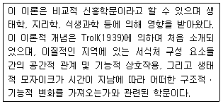
- 보전생태학
- 경관생태학
- 복원생태학
- 도시생태학
(정답률: 알수없음)
28. 우리나라의 토지적성 구분 중 관역토지이용계획에서의 개발 불가능자 조건에 해당되지 않는 건은? (단, 2차 보전용지로 자연환경을 고려한다.)
- 임상 3영급 이상 지역
- 표고 100 ~ 200m 지역
- 경사도 15% 이상 지역
- 녹지자연과 8등급 이상 지역
(정답률: 알수없음)
29. '국토환경성평가도'를 활용한 도시계획 수립 시, 3등급 완충지역으로 구분되는 지역은?
- 도시지역 내 녹지지역(자연녹지)
- 도시지역 내 생태계보존지구
- 도시지역 바깥 문화재보존지구
- 도시지역 바깥 자연환경보전지역
(정답률: 알수없음)
30. 생태ㆍ경관보전지역, 자연휴식지 및 자연공원법에 의한 자연공원 등을 이용하는 사람에게 자연환경보전의 인식증진 등을 위하여 자연환경해설ㆍ홍보가ㆍ교육ㆍ생태탐방안내 등을 전문적으로 수행하는 사람의 공식명칭은?
- 자연환경안내원
- 자연해설가
- 자연환경학습원
- 자연해설 활동가
(정답률: 알수없음)
31. Forman & Godron 등이 정한 경관생태의 구성요소에 해당하지않는 것은?
- patch
- edge
- matrix
- view point
(정답률: 알수없음)
32. '지방의제 21'의 성격에 대한 설명 중 틀린 것은?
- '지방의제 21'의 실천주체는 주민 개개인이다.
- '지방의제 21'은 사회운동으로서의 성격을 지닌다.
- 지역환경관리계획으로 '지방의제 21'을 대체할 수 있다.
- '지방의제 21'은 시민환경개선행동계획이다.
(정답률: 70%)
33. Edward & Hubert(1994)와 Graham Bennett(1998)가 제안한 분류법으로서 가장 공감을 얻고 있으며 대부분의 유럽 국가들이 활용하고 있는 생태 네트워크의 공간구성원리 분류는 다음 중 어느 것인가?
- 핵심지역(Core), 완충지역(Buffer), 코리더(Corridor)
- 핵심지역(Core), 완충지역(Buffer), 전이지역(Transition)
- 핵심지역(Core), 전이지역(Transition), 코리더(Corridor)
- 완충지역(Buffer), 전이지역(Transition), 코리더(Corridor)
(정답률: 알수없음)
34. 다음 중 자연환경보전법에 근거한 '자연환경조사'에 대한 설명으로 틀린 것은?
- 환경부장관은 관계중앙행정기관의 장과 협조하여 10년마다 전국의 자연환경을 조사하여야 한다.
- 환경부장관은 관계중앙행정기관의 장과 협조하여 생태자연도에서 1등급 권역과 2등급 권역으로 분류된 지역과 자연 상태의 변화를 특별히 파악할 필요가 있다고 인정되는 지역에 대하여 5년마다 자연환경을 조사할 수 있다.
- 지방자치단체의 장은 당해 지방자치단체의 조례가 정하는 바에 의하여 관할 구역의 자연환경을 조사할 수 있다.
- 지방자차단체의 장이 자연환경을 조사하는 경우에는 조사 계획 및 조사결과를 환경부장관에게 보고하여야 한다.
(정답률: 알수없음)
35. 다음 중 GIS를 활용 가능한 자연환경정보의 내용이 아닌 것은?
- 대상지 규모
- 토지 피복/이용
- 산림 및 산지
- 오염물질 종류
(정답률: 알수없음)
36. 다음 중 야생동물 이동통로 설계 시에 중요하게 고려하지 않아도 되는 항목은?
- 야생동물 이동능력
- 조성 비용의 타당성
- 인간에 의한 간섭 여부
- 연결되어야 할 보호지역 사이의 거리
(정답률: 알수없음)
37. 옴부즈만(Ombudsman) 제도의 기능과 거리가 먼 것은?
- 국민의 권리구제기능
- 국가재정확보 기능
- 갈등해결기능
- 사회적 이슈의 제기 및 행정정보 공개기능
(정답률: 알수없음)
38. “지속 가능한 발전” 이라는 기본원칙 하에서 자연입지적 토지이용의 기본 관리방향들 만으로 적합하게 짝지워진 것은?
- 생태ㆍ자원관리형 보전, 국가경제와 부합하는 개발 유도, 무분별한 난개발 방지
- 생태ㆍ자원관리형 보전, 무분별한 난개발 방지, 부동산 투기의 억제
- 생태ㆍ자원관리형 보전, 무분별한 난개발 방지, 경관자원과 조화된 개발 유도
- 생태ㆍ자원관리형 보전, 무분별한 난개발 방지, 생태계보전 협력금 제도의 활성화
(정답률: 알수없음)
39. 어메니티 플랜의 기본방침과 거리가 먼 것은?
- 지역의 특성을 감안하여 시민의 의향을 충분히 반영한 개성적인 계획이어야 한다.
- 계획의 내용은 실현가능성이 있어야 한다.
- 민ㆍ관의 구분없이 지역경제의 활성화에 우선적으로 기여할 수 있어야 한다.
- 종래 행해져 왔던 개별 시책, 신규 시책과 유기적인 연계 관계를 가져야 한다.
(정답률: 알수없음)
40. 환경문제에 대응하기 위한 국제사회의 협력이나 규제에 대한 유형 설명 중 틀린 것은?
- 국제기구 - 환경협약의 실천을 위한 일정한 권한을 지니는 기구를 설치하게 되는데, 상당 수준의 구속력을 지니거나 국제적인 발전방향을 제시하기도 한다.
- 선언, 지침, 선고 등 - 구속력은 없지만 실천과제나 향후의 발전방향을 제시해준다.
- 국제사법기관의 판결 - 국제사법재판소와 같은 국제사법 기구의 중재와 판결은 강한 구속력을 가지며, 국제적인 환경 규제나 정책수립에 매우 중요하다.
- 양자간 혹은 다자간 조약 - 조약은 협약(convention), 의정서(protocol), 협정서(agreement) 등으로도 부르는 국제적인 합의지만, 구속력은 없다.
(정답률: 알수없음)
3과목: 생태복원공학
41. 임해매립지 생태복구 시 객토 방법 중 틀린 설명은?
- 식재구덩이 바닥에는 Ca 화합물을 사용하여 Na 이온의 해를 완화시킨다.
- 식재구덩이 바닥에는 자갈층을 10~15cm 정도 포설하여 체수 피해와 하층의 염분상승을 제어한다.
- 자갈층 위에는 자갈층을 깐다.
- 객토두께는 최소한 0.3m로 확보하여 수목의 생육최소 토심을 조성한다.
(정답률: 알수없음)
42. 콘크리트관을 이용하여 측구를 설치하려 할 때 다음 조건에서 우수가 충만하여 흐를 경우의 유량(m3/s)은?
- 2.16m3/s
- 1.24m3/s
- 0.96m3/s
- 0.48m3/s
(정답률: 알수없음)
43. 다음 비탈(면)식생재녹화공법 중 식물의 자연침입을 촉진하는 식생공법을 총칭하는 것은?
- 식생대녹화공법
- 식생반녹화공법
- 식생유도공법
- 지오웨브공법
(정답률: 알수없음)
44. 다음 중 폐광에서 생겨나는 훼손의 유형이 아닌 것은?
- 노출된 지형
- 광미(tailing, 鑛尾)
- 지반침하
- 여울(riffle)
(정답률: 알수없음)
45. 다음은 녹화용 식물의 종자 파종시 종자파종량을 구하는 공식이다. 파종량 산출식으로 옳은 것은?(단, W=파종량, A:발생기대본수, B:사용종자의 발아율, C:발아종자의 순도, D:사용종자의 1g 당 단위립수, E: 식생기반재 두께에 따른 공법별 보정계수, F: 시공시기의 보정률)
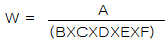
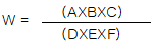
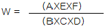
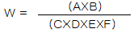
(정답률: 알수없음)
46. 야생동물 이동통로의 설치에 있어 가장 핵심이 되는 요소는 무엇인가?
- 위치의 선정
- 유형의 결정
- 식생의 복원
- 제원의 확정
(정답률: 알수없음)
47. 개체나 개체군이 모여서 패치를 형성하는 형태를 에코톱(ecotope)에 대한 설명으로 틀린 것은?
- 지도에 표시될 수 있는 균질한 성질을 가진 최대단위이다.
- 일반적인 입지조건, 잠재적인 자연식생이나 잠재적 생태계 기능이 균질하다.
- 다른 천이단계나 토지이용의 패치를 포함하는 경우도 있다.
- 인간에 대한 토지이용은 에코톱(ecotope)에 영향을 준다.
(정답률: 알수없음)
48. 자생적 독립영양 천이 유형에서 종 다양성을 천이과정으로 가장 적합한 설명은?
- 지속적으로 증가한다.
- 처음에는 감소하나 개체의 수가 증가함에 따라 성숙된 단계에서는 증가한다.
- 처음에는 감소하나 개체의 수가 증가함에 따라 성숙된 단계에서는 안정된다.
- 처음에는 증가하나 개체의 크기가 증가함에 따라 성숙된 단계에서는 안정되거나 감소한다.
(정답률: 알수없음)
49. 빗물을 활용한 생태연못을 조성하고자 한다. 다음 [보 기]의 ( )안에 적합한 과정은?
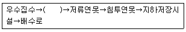
- 빗물의 전처리 시설
- 빗물의 침투 관거
- 빗물의 침투 측구
- 유공관
(정답률: 알수없음)
50. 습지의 복원 시 고려되어야 할 요소로서 가장 거리가 먼 것은?
- 구성(composition)
- 기능(function)
- 균질성(homogeneity)
- 역동성과 회복력(dynamics and resilience)
(정답률: 알수없음)
51. 서식지의 분절화와 관련된 설명으로 틀린 것은?
- 면적효과란 서식지의 면적이 클수록 종수나 개체수가 적어지는 것을 말한다.
- 거리효과란 서식지 상호 간의 거리가 작을수록 생물의 왕래가 용이하게 되는 것을 말한다.
- 장벽효과의 정도는 동물의 이동공간과 이동능력에 따라 달라지게 된다.
- 가장자리효과란 안정된 내부환경을 좋아하는 종이 서식하기 어려워지는 현상을 말한다.
(정답률: 알수없음)
52. 복원을 위한 절ㆍ성토를 행하였다. 절ㆍ성토 경계부의 대책으로 틀린 것은?
- 절ㆍ성토 경계부에 맹암거 설치
- 절토시 B두초 Cut(층따기) 설치
- 다짐 철저
- 절ㆍ성토 경계부에 구배 1:2 정도의 구간 설치
(정답률: 알수없음)
53. 식물 발생재를 분쇄하여 식재지에 활용했을 때 유리한 점이 아닌 것은?
- 표층의 생물의 다양화를 촉진할 수 있다.
- 표층의 미관을 향상할 수 있다.
- 표층의 부식화 진행을 방지할 수 있다.
- 표층의 건조방지와 보수력을 향상시킬 수 있다.
(정답률: 알수없음)
54. 해안 생태복원에 있어서 가장 먼저 조치해야 할 사항은?
- 지표안정을 위한 바람막이 설치
- 그물망 설치
- 거적덮기
- 넝쿨식물 식재
(정답률: 알수없음)
55. 양단면적이 각각 40m2, 50m2이고, 두 단면간의 높이가 20m일 때의 토사량은 얼마인가?
- 450m2
- 600m2
- 750m2
- 900m2
(정답률: 알수없음)
56. 인간과 생물종간의 거리 관계에서 다음이 설명하는 것은?
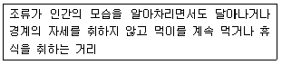
- 비간섭 거리
- 경계거리
- 회피거리
- 도피거리
(정답률: 알수없음)
57. 자연형 하천복구를 위한 꺾꽂이용 버드나무류의 재질 요건으로서 틀린 것은?
- 갯버들은 8mm 이상의 원줄기에 의한 재료를 활용한다.
- 꺾꽂이용 가지는 견실하되 잎을 가지당 2~3개 유지하도록 채취한다.
- 꺾꽂이용 나무의 길이는 공법유형에 따라 다르나 30cm이하로 채취한다.
- 꺾꽂이용 주가지는 직경 1~2cm이고 약 25% 이상의 맹아력이 있는 가지를 혼합한다.
(정답률: 알수없음)
58. 일반토양의 복토하여 훼손지를 복구하는 공사에서 초화류의 식재를 위해 확보해야 할 생존 최소토심은?
- 5cm
- 15cm
- 25cm
- 30cm
(정답률: 알수없음)
59. 야생동물 이동통로는 생태적 네트워크가 필수적으로 갖추어져 있어야 한다. 이와 같은 지역에 해당되지 않는 것은?
- 주요 서식처 유형의 보전을 확보하기 위한 핵심지역(core area)
- 개별적 종의 핵심지역간 확산(disperse) 및 이주(migrate)를 위한 회랑(corridor) 또는 디딤돌(stepping stone)
- 서식처의 다양성을 제한하고 최대크기로의 네트워크의 확산 을 위한 자연지역
- 오염 또는 배수 등의 외부로부터의 잠재적 위험으로부터 네트워크를 보호하기 위한 완충지역
(정답률: 알수없음)
60. 수목의 근계(뿌리)에 대한 설명 중 틀린 것은?
- 수목의 근계는 지상부를 지지하고 토양으로부터 수분과 영양염류를 식물체 내로 흡수하는 역할을 하는 기관이다.
- 근계는 암반의 균열을 크게 하는 물리적인 역할을 수행한다.
- 근계는 토양을 산화시키는 등 화학적 작용과는 관계가 없다.
- 수목을 지지하고 있는 뿌리는 유관속에 형성층이 있어서 분열 비대하여 간다.
(정답률: 알수없음)
4과목: 경관생태학
61. 자연의 복원과 관련된 용어의 설명 중 가장 올바른 것은?
- 복원: 훼손된 자연의 기능만 새롭게 조성하는 것
- 복구: 훼손된 자연을 자연 상태와 유사한 상태에 도달하도록 회복시키는 것
- 재배치: 훼손되기 이전의 자연구조를 원래 있는 상태로 완전히 회복시키는 것
- 대체: 훼손된 지역을 자연의 회복력에 의하여 완전히 재생되도록 하는 것
(정답률: 알수없음)
62. 생태적 천이과정 유형 중 인위적이거나 자연적 교란에 의해서 기존의 식물군집이 손상되면서부터 진행되는 천이의 유형은?
- 2차천이
- 중성천이
- 순환천이
- 3차천이
(정답률: 알수없음)
63. 남한의 생태지역의 구분에서 여름에 가장 서늘하고 겨울에도 춥지 않고 해안을 따라 산지경사가 급하고 연어의 회귀로 유명한 남대천과 금강송이 있는 지역은?
- 울영해안지역
- 강원해안지역
- 남해동부지역
- 남해서부지역
(정답률: 알수없음)
64. 해안경관에 영향을 미치는 인공적인 요인으로는 항만건설, 간척이나 매립, 준설 등을 들 수 있다. 다음 중 준설로 인하여 일어나는 현상으로 가장 거리가 먼 것은?
- 조류나 연안류의 흐름에 영향을 초래하여 해안선의 퇴적과 침식에 변화를 가져온다.
- 연안생태계의 서식기반인 해저면의 교란을 야기한다.
- 부유토사 발생으로 인한 1차 생산력을 저하시킨다.
- 연안생태계의 생물다양성을 증가시킬 서식지가 조성된다.
(정답률: 알수없음)
65. GIS를 활용하여 여러 자연조건을 기준으로 캐나다에서 사용하는 자연환경정보의 수집단위로서 가장 적절한 것은?
- 야생동물의 서식지 단위를 기초로한 약 100ha 크기의 다각형
- 1km x 1km의 격자구조
- 생태계 단위, 생물기후학적 단위, 생태지구단위
- 생태적으로 동질성을 갖는 단위
(정답률: 알수없음)
66. 위성 원격탐사(remote sensing)를 환경 문제에 응용할 경우 유리한 특징이 아닌 것은?
- 정확성
- 광역성
- 동시성
- 주기성
(정답률: 알수없음)
67. 경관생태 네트워크에서 핵심지역의 생물들이 먹이 자원을 확보 하거나 유전적 다양성을 유지하는데 필요한 지역이며, 소규모 생물서식공간으로서 보존녹지와 소류지를 포함하는 지역은?
- 핵심생태지역
- 거점생태지역
- 연결생태지역
- 완충생태지역
(정답률: 알수없음)
68. 다음 중 직접 미기후에 영향을 미치는 가장자리 조절인자로 부적합한 것은?
- 토양
- 군집
- 태양광
- 바람
(정답률: 알수없음)
69. 다음 보기 중 도로가 건설됨으로 나타나는 경관생태적 문제점이 아닌 것은?
- 접근성 증대
- 서식처 단절
- 패치의 파편화
- 비탈면 대형화
(정답률: 알수없음)
70. 환경영향평가시 영향예측이나 저감 대책을 수립하기 위해 선행되어야 할 것은?
- 주민과의 타협
- 문헌자료의 리뷰
- 일반적인 환경사항 리뷰
- 사업지구의 현황조사를 통한 저감 방안 모색
(정답률: 알수없음)
71. 비오톱이 갖는 보전과 조성의 의의가 아닌 것은?
- 생활환경의 개선
- 사람이 들어가면 안 되는 핵심지역
- 생태계의 보전 및 복원
- 어린이에 대한 자연환경 교육
(정답률: 알수없음)
72. 토지의 자연성을 나타내는 하나의 지표이며, 육지역(陸地域)자연에 대한 인간의 인위적인 영향 정도와 잔존 자연의 질을 식물군락의 자연성을 기준으로 그 변화와 정도를 등급으로 나누어서 표시한 판정법은 무엇인가?
- 현존식생도
- 녹지자연도
- 생태자연도
- 생태민감도
(정답률: 알수없음)
73. 경관생태학의 개념 설명 중 틀린 것은?
- 경관생태학이란 인접한 생태계의 상호작용을 연구하는 학문이다.
- 지역을 다루는 생태학을 지역생태학이라 한다.
- 지역 내 공간 요소들이 경관이다.
- 생태학은 경관과 지역의 상호작용을 연구하는 학문이다.
(정답률: 알수없음)
74. 서식지 파편화에 의한 멸종가능성이 높은 종이라고 할 수 있는 것은?
- 몸체가 작은 종
- 종의 확산이 쉬운 종
- 유전적 변이가 낮은 종
- 좁은 행동권을 요구하는 종
(정답률: 알수없음)
75. 다음 도시농업과 관련된 설명 중 틀린 것은?
- 화석연료는 농업의 효율성과 경장규모를 증대시켰다.
- 전통적 농업체계의 에너지 투입은 사람과 가축에 의해 이루어져 왔다.
- 재활용을 통해 새로운 에너지 생성이 가능하다.
- 한 생태계의 유지를 위하여 다른 생태계로부터 에너지가 투입되는 것이 에너지 보조이다.
(정답률: 알수없음)
76. 그림은 종 공급지역 (Source area), 패치(Patch), 코리더(Corridor) 모형이다. 다음 중 종의 공급지역(Source Area)에 대한 서술로 틀린 것은?
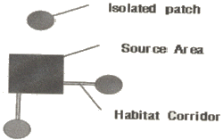
- 종다양도가 높은 지역으로 다른 지역으로 생물자원을 공급하는 역할을 한다.
- 종다양도가 높은 지역으로 코리더를 통하여 다른 지역으로 종을 공급해준다.
- 종다양도가 높은 지역으로 다른 패치와의 거리가 멀수록 종공급에 유리하다.
- 종다양도가 높은 지역으로 코리더가 없는 분리된 패치는 종공급을 받기 불리하다.
(정답률: 알수없음)
77. 다음 그림의 경관(서식처) 요소와 실제 도시지역에서 볼 수 있는 사례로 적절하게 연결되지 않은 것은?
- Matrix Corridor(매트릭스 코리더) - 옥상습지생태공원
- Restored Corridor(복원된 코리더) - 복원된 하천
- Linear Corridor(선형 코리더) - 가로수
- Stepping Stone Corridor(디딤돌 코리더) - 생태연못
(정답률: 알수없음)
78. 경관생태학에서 많이 이용하는 RS에 관한 설명으로 가장 거리가 먼 것은?
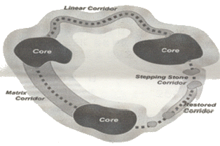
- 비접촉 센서시스템을 이용하여 기록, 측정, 화상해석, 에너지 패턴의 디지털표시 등을 함으로써 관심의 대상이 되는 물체와 환경의 물리적 특징에 관한 신뢰성 높은 정보를 얻는 과학 및 기술이라고 정의된다.
- 전자파정보는 물체에 반사되어 Sensor로 되돌아오는 과정에서 수중, 대기 및 이온층의 영향을 받아 Noise가 첨가되기 때문에 고려할 사항이 많다.
- Lansat TM 같은 경우 50m의 해상도 영상을 획득하여 우리나라에서 자주 사용되고 있다.
- IKONOS 영상의 경우 첩보급 상용위성으로서 1m, 4m의 해상도를 획득하여 그 수요가 높다.
(정답률: 알수없음)
79. 다음의 그래프는 생태복원의 단계와 유형에 관한 것이다. 그래프안의 A, B, C, D에 알맞은 것을 순서대로 올바르게 나열한 것은?
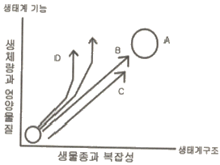
- A:원래의 생태계, B:복구, C: 복원, D: 대체
- A:원래의 생태계, B:복원, C: 복구, D: 대체
- A:원래의 생태계, B:안정, C: 복원, D: 복구
- A:원래의 생태계, B:대체, C: 복원, D: 안정
(정답률: 알수없음)
80. 다음 중 생태학적 원리를 자연관리에 응용하는 생태기술의 기반으로 틀린 것은?
- 자연 자원의 흐름 경로
- 물질의 이동 형태
- 유전 구조
- 물질의 이동 원리
(정답률: 알수없음)
5과목: 자연환경관계법규
81. 국토기본법상 “국토계획”에 포함되지 않는 계획은?
- 국토종합계획
- 도서종합계획
- 부문별계획
- 시군종합계획
(정답률: 알수없음)
82. 산지관리법령상 산지전용 등 산지개발시 미리 재해방지 또는 복구에 필요한 비용을 산림청장에게 예치하는 경우는?
- 산지전용을 하고자 하는 면적이 700제곱미터인 경우
- 정부투자기관이 시행하는 공용ㆍ공공용시설의 설치사업으로서 산지전용 등을 완료한 후 복구를 위한 예산집행이 가능한 예산내역서(복구비 별도계상)를 제출한 경우
- 임도, 방화선 또는 산림보호시설을 설치하기 위하여 산지 전용신고를 하는 경우
- 산책로, 탐방로, 등산로를 설치하기 위하여 산지전용허가를 받은 경우
(정답률: 알수없음)
83. 국토의 계획 및 이용에 관한 법률상 용도지역 안에서 건폐율의 최대한도로 틀린 것은?
- 농림지역 : 20퍼센트 이하
- 자연환경보전지역 : 20퍼센트 이하
- 도시지역 중 녹지지역 : 30퍼센트 이하
- 관리지역 중 계획관리지역 : 40퍼센트 이하
(정답률: 알수없음)
84. 야생동ㆍ식물보호법규상 곤충류 중 환경부 지정 멸종위기 야생동ㆍ식물 Ⅰ급이 아닌 것은?
- 수염풍뎅이
- 소똥구리
- 두점박이사슴벌레
- 산굴뚝나비
(정답률: 알수없음)
85. 자연환경보전법령상 자연환경조사의 내용으로 거리가 먼 것은?
- 토양의 특성
- 농작물ㆍ가축 등과 유전적으로 가까운 야생종의 서식현황
- 경제적 또는 의학적으로 유용한 생물종의 서식 현황
- 주변 농가의 사육현황
(정답률: 알수없음)
86. 자연공원법상 공원관리청이 공원계획으로 결정하는 용도지구가 아닌 것은?
- 공원자연보존지구
- 공원자연경관지구
- 공원자연환경지구
- 공원집단시설지구
(정답률: 알수없음)
87. 야생동ㆍ식물보호법령상 생물자원의 분류ㆍ보전 등에 관한 관련 전문가로 가장 거리가 먼 것은?
- 「국가기술자격법」에 의한 자연생태복원산업기사
- 「국가기술자격법」에 의한 생물분류기사
- 생물자원 관련 분야의 석사학위 이상 소지자로서 동분야에서 1년 이상 종사한 자
- 생물자원 관련 분야의 학사학위 소지자로서 동 분야에서 3년이상 종사한 자
(정답률: 알수없음)
88. 독도 등 도서지역의 생태계보전에 관한 특별법상 특정도서 지정대상으로 가장 거리가 먼 것은?
- 지형 또는 지질이 특이하여 학술적 보전이 필요한 도서
- 야생동물의 도래지로서 보전가치가 있다고 인정된 도서
- 「문화재보호법」규정에 의거 무형 문화재적 보전가치가 높은 도서
- 계곡ㆍ폭포ㆍ해안 등 자연경관이 뛰어난 도서
(정답률: 알수없음)
89. 독도 등 도서지역의 생태계 보전에 관한 특별법상 특정 도서 안에서 제한되는 행위에 속하지 않는 것은?
- 도로의 신설
- 택지의 조성
- 가축의 방목
- 농경지 경작
(정답률: 알수없음)
90. 야생동ㆍ식물보호법규상 생태계교란 야생동ㆍ식물로만 나열된 것은?
- 황소개구리, 큰입배스, 물참새피
- 돼지풀, 히어리, 홍월귤
- 털물참새피, 도깨비가지, 황근
- 단풍잎돼지풀, 붉은귀거북, 자주땅귀개
(정답률: 알수없음)
91. 산지관리법규상 산사태위험판정기준표 중 조사자의 점수보정 인자로 틀린 것은?
- 조사자 또는 마을 사람들이 산사태발생 위험지역이라고 생각함 : +10
- 조사자 또는 마을사람들이 산사태발생 위험성이 전혀 없다고 생각함 : 0
- 인위적 산림훼손지로 방치하거나 불완전한 방제시설지 : +20
- 과수원 및 초지단지, 유실수조림지 등 지피식생이 불완전한 산지 : +20
(정답률: 알수없음)
92. 환경정책기본법령상 하천의 수질 및 수생태계 환경기준으로 옳지 않은 것은? (단, 사람의 건강보호 기준)
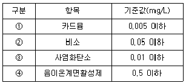
- ①
- ②
- ③
- ④
(정답률: 알수없음)
93. 야생동ㆍ식물보호법규상 멸종위기야생동ㆍ식물 지정현황으로 옳은 것은?
- 포유류의 경우 Ⅰ급이 10종, Ⅱ급이 10종 지정되어 있다.
- 육상식물의 경우 Ⅰ급이 8종, Ⅱ급이 56종 지정되어 있다.
- 곤충류의 경우 Ⅰ급이 5종, Ⅱ급이 17종 지정되어 있다.
- 어류의 경우 Ⅰ급이 6종, Ⅱ급이 11종 지정되어 있다.
(정답률: 알수없음)
94. 백두대간 중 특별히 보호할 필요가 있다고 인정되는 지역을 백두대간보호지역으로 지정ㆍ고시하는 기관장은 누구인가?
- 환경부장관
- 국립환경과학원장
- 유역(지방)환경청장
- 산림청장
(정답률: 알수없음)
95. 국토의 계획 및 이용에 관한 법률상에서 정하고 있는 용도구역에 해당되지 않는 것은?
- 개발제한구역
- 시가화조정지역
- 수도계획구역
- 수산자원보호구역
(정답률: 알수없음)
96. 산지관리법상 정한 보전산지 중 공익용 산지에 해당되지 않는 것은?
- 「사방사업법」에 의한 사방지의 산지
- 「임업 및 산촌 진흥촉진에 관한 법률」에 의한 임업진흥권역의 산지
- 「자연공원법」에 의한 공원의 산지
- 「문화재보호법」에 의한 문화재보호구역의 산지
(정답률: 알수없음)
97. 습지보전법상 습지보전계획수립에 관한 규정 중 ( )안에 순서대로 알맞게 나열된 것은?
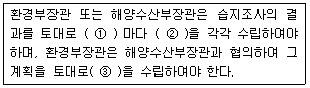
- 5년 - 습지보전기본계획 - 습지보전실시계획
- 5년 - 습지보전기초계획 - 습지보전기본계획
- 2년 - 습지보전기본계획 - 습지보전사업계획
- 2년 - 습지보전기초계획 - 습지보전실시계획
(정답률: 알수없음)
98. 농지법상 농업진흥지역의 지정에 관한 내용으로 옳은 것은?
- 농업진흥지역은 농업기반정비사업이 시행계획 예정인 지역에 한해서 농업용으로 이용할 토지가 있거나 이용할 토지가 분산화되어 있는 지역에 지정한다.
- 농업진흥지역의 지정대상은 도시지역 안에서의 녹지지역과 관리지역, 농림지역은 포함되나, 광역시와 특별시의 녹지 지역은 제외된다.
- 농림부장관은 주거지역 또는 생산관리지역이 농업진흥지역에 포함될 경우에는 농업진흥지역의 지정을 승인하기 전에 건설교통부장관과 협의 하여아 한다.
- 시ㆍ도지사가 농림부장관에게 농업진흥지역의 지정승인을 요청하고자 하는 경우에는 시ㆍ도농정심의회의 심의를 거쳐야 한다.
(정답률: 알수없음)
99. 자연환경보전법규상 생태ㆍ경관보전지역의 완충구역내에서 허용할 수 있는 행위가 아닌 것은?(단, 생태ㆍ경관보전지역안에 자연공원법에 의하여 지정된 공원구역 또는 문화재보호법에 의한 문화재(보호구역 포함)가 포함되는 경우 제외)
- 생태ㆍ경관보전지역관리기본계획에 반영된 시설 중 자연 학습장, 수목원, 생태숲등 자연환경의 교육ㆍ홍보 또는 연구를 위한 시설의 설치
- 생태ㆍ경관보전지역관리기본계획에 반영된 시설 중「청소년활동진흥법」규정에 따른 청소년수련원의 설치
- 지목이 대지인 토지에서 지상층의 건축연면적이 130제곱미터 이하이고 높이가 2층 이하이며, 지하층의 건축연면적이 130제곱미터 이하인 단독주택ㆍ슈퍼마켓의 신축
- 생태ㆍ경관보전지역을 방문하는 사람을 위한 음식ㆍ숙박ㆍ판매시설로서 건축연면적이 330제곱미터 이하이고 층수가 4층 이하인 건축물의 신축
(정답률: 알수없음)
100. 건설교통부장관이 도시의 무질서한 확산을 방지하고 도시주변의 자연환경을 보전하여 도시민의 건전한 생활환경을 확보하기 위하여 지정할 수 있는 지역/구역의 명칭은?
- 도시보호지역
- 자연환경보전지역
- 도시공원지역
- 개발제한구역
(정답률: 알수없음)